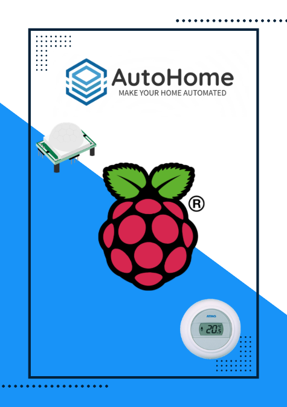

Autohome
Autohome was mijn eerste project tijdens Software Engineering. Met mijn projectgroep heb ik een simpele home-assistant-fork gemaakt op een Raspberry Pi.
Een lichtsensor leest de lichtniveaus. Daarna kunnen de lichten automatisch aan of uit gaan.
Gebruikte technieken
- Python
- Raspberry Pi
- Lichtsensor